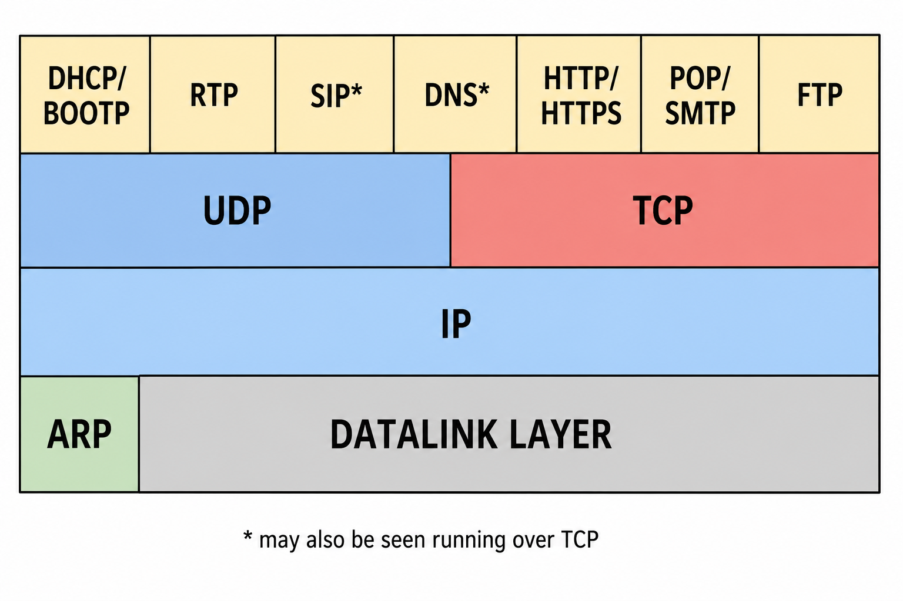
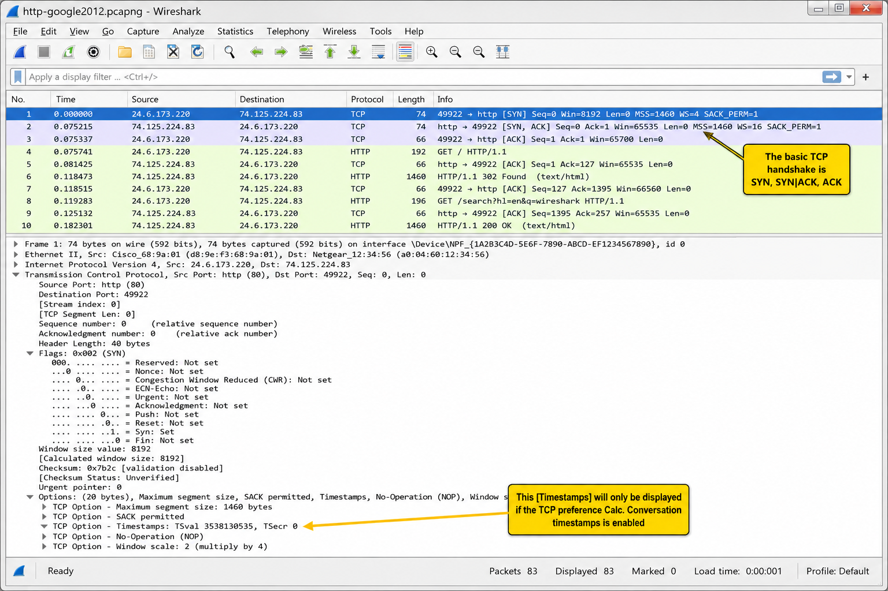
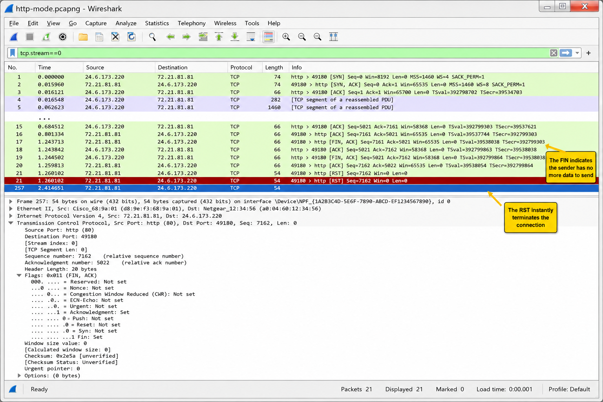
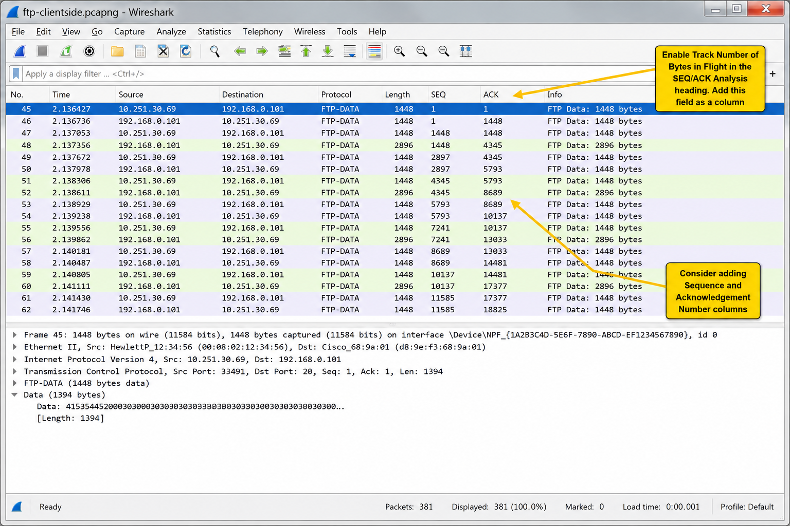
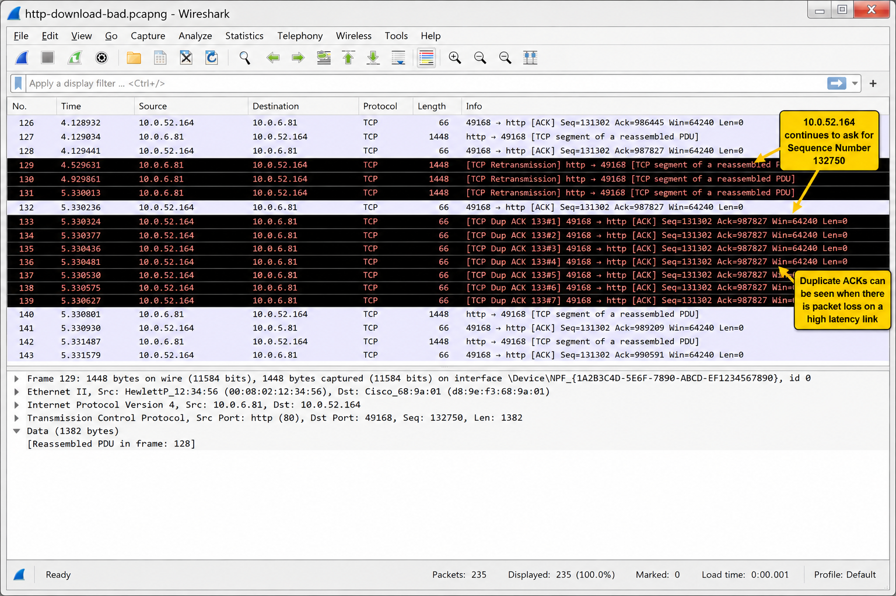
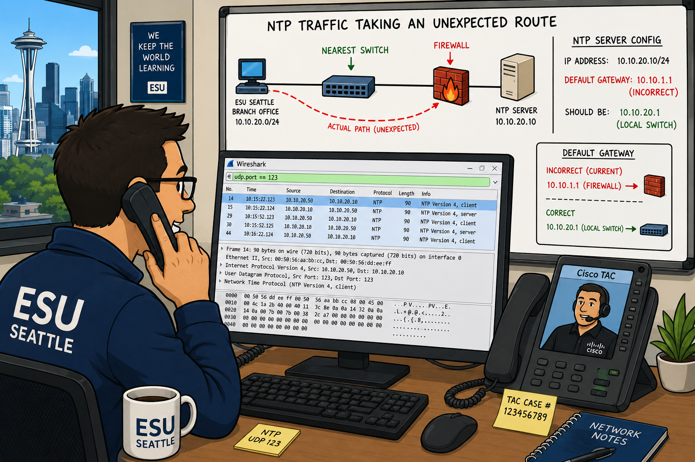

UDP and TCP are both transport protocols at Layer 4 — but they make opposite tradeoffs. If you had to choose between guaranteed delivery and low overhead, when would each choice be appropriate? What kind of applications would fail with TCP but work fine with UDP?
The Purpose of UDP
If you capture a trace of broadcast/multicast traffic you already have a lot of UDP-based communications. UDP provides for connectionless transport services. Broadcast and multicast traffic flows over UDP. The UDP header port fields identify the application using the transport. Because UDP uses a simple 8-byte header that consists of four fields, UDP itself rarely experiences much trouble. UDP is defined in RFC 768.

Common applications that use UDP are DHCP/BOOTP, SIP, RTP, DNS, TFTP, and various streaming video applications.
As Laura Chappell writes in this chapter: "UDP is relatively boring compared to the exciting, complex world of TCP." UDP problems are simple: either the port is blocked (firewall) or the UDP traffic generates an ICMP Destination Unreachable/Port Unreachable response. There's no connection state, no retransmission, no window management to troubleshoot.
Normal UDP communications use destination port numbers to identify the target application. DNS typically uses port 53, DHCP uses 67/68, NTP uses 123. Most applications use a temporary (ephemeral) port number for the client side. What determines the range of ephemeral port numbers, and how does this affect filtering?
Analyze Normal UDP Traffic
Normal UDP communications, such as DHCP Discover packets, are sent with the destination port number of the desired service. DHCP uses UDP as the transport protocol — port 68 for the client and port 67 for the server. Figure 219 shows the UDP header in a DHCP packet.

Most applications use an ephemeral (temporary) port number for the client side of the communications. For example, a DNS query is typically sent to port 53. The source port is a temporary number assigned for this communication only. For more information on DHCP communications, refer to Chapter 22.
DNS: 53 | DHCP server: 67 | DHCP client: 68 | TFTP: 69 | NTP: 123 | SNMP: 161/162 | NetBIOS Name: 137 | RTP (VoIP): dynamic (usually 16384-32767) | SIP: 5060 | Teredo: 3544
There are very few problems that occur directly with UDP itself — but port-based firewalls can cause UDP to appear broken. When a firewall blocks UDP traffic, it may silently discard the packets. How can you tell the difference between a silent firewall drop and a service that simply isn't running?
Analyze UDP Problems
There are very few problems that can occur directly with UDP. One potential problem is blocked traffic based on the UDP port number value.
Figure 220 shows the results of capturing UDP traffic on a network that consists of a firewall that does not forward traffic sent to certain port numbers. In this case, the firewall is blocking traffic to ports 161 (SNMP) and 5060 (SIP). Rather than responding with ICMP Destination Unreachable/Port Unreachable (Type 3/Code 3) packets, the firewall silently discards the packets. Your trace file only shows the UDP traffic — no responses.

Port closed (no service): host sends ICMP Type 3, Code 3 (Port Unreachable) — you'll see alternating UDP requests and ICMP responses in Wireshark (striping).
Firewall silently drops: no ICMP response — only the UDP requests appear in the trace. This makes UDP troubleshooting harder because there's no explicit rejection signal.
UDP scans are evident when you see the striping of UDP packets and ICMP Port Unreachable responses using Wireshark's default coloring rules. Figure 221 shows a UDP scan targeting 192.168.1.123 — the UDP scan has not located an open UDP port yet as each UDP packet has triggered an ICMP Destination Unreachable/Port Unreachable response.

The UDP header is only 8 bytes — just source port, destination port, length, and checksum. Why does UDP include a Length field when the IP header already contains a Total Length field? And why is the UDP checksum optional (0x0000) in some implementations?
Dissect the UDP Packet Structure
The UDP header is defined with the value 17 (0x11) in the IP header Protocol field. The UDP header only contains four fields and is always 8 bytes long.

Source Port Field
The source port field has the same purpose in TCP and UDP — to open a listening port for response packets, and in some cases, define the application or protocol that is sending the packet.
Destination Port Field
This field value defines the destination application or process for the packet. In some instances the source and destination port numbers are the same for client and server processes. In other instances, you may find a separate and unique number for the client and server process (as in the case of DHCP). Still another variation is to allow the client to use temporary port numbers for their side of the communications and a well-known port number for the server side of the communications.
Length Field
The length field defines the length of the packet from the UDP header to the end of valid data (not including any data link padding). This is a redundant field — you can calculate it from the IP Total Length field. However, it allows the UDP layer to determine payload size independently of the IP layer. Consider the following three length fields:
- IP Header Length = 5 (denoted in 4-byte increments) → IP header is 20 bytes long
- IP Total Length Field = 329 bytes
- The data after the IP header is 309 bytes (329-20). The UDP length field should also be 309 bytes (including the 8-byte UDP header).
Checksum Field
The checksum is performed on the contents of the UDP header (except the checksum field itself), the data, and a pseudoheader derived from the IP header. The pseudoheader contains: source IP, destination IP, protocol field, and UDP length field.
UDP-based communications do not always require a checksum — sometimes you will see this field set to all zeros (0x0000) which tells the recipient that the checksum should not be validated. UDP checksums are optional in IPv4 but mandatory in IPv6.
UDP Length Field = UDP header (8 bytes) + UDP payload. If IP Total Length is 329 and IP header is 20 bytes, the UDP segment is 309 bytes. Subtract the 8-byte UDP header and you know there are 301 bytes of actual data payload. This can help identify unusual packet sizes or potential padding issues.
Filter on UDP Traffic — Case Study
UDP Display Filters
The capture filter for UDP traffic is simply udp. The display filter syntax is also udp.
udp.dstport==137 — NetBIOS Name Service
udp.length > 248 — UDP packets >240 data bytes (8 byte header)
udp.port==53 — DNS traffic (client + server)
udp.port==123 — NTP traffic
udp && !icmp — UDP traffic without associated ICMP errors
Case Study: Troubleshooting Time Synchronization

I was asked to troubleshoot a switch that was not getting updates from our NTP (Network Time Protocol) server. Further investigation revealed that a few routers and switches were also not synchronizing with the NTP server.
I opened a Technical Assistance Center (TAC) case with Cisco and we went to troubleshoot the issue.
We found out that all NTP traffic (udp.port==123) was being forwarded by the router to the NTP server before the last switch. So it was not a Cisco routing issue.
I started using Wireshark to determine where the traffic from the NTP server was going.
To my surprise, the next hop for the Layer 2 traffic from the NTP server was going to the firewall instead of the nearest switch and router. The NTP server was not configured with our default gateway. Reconfiguring the NTP server fixed the problem.
So, again — Wireshark to the rescue!
TL;DR — Chapter 19
UDP offers connectionless transport services. The UDP header itself is a simple 8-byte header primarily used to define the port number of the services supported. The checksum field in the UDP header may not even be used.
When a target does not support services on the desired port, the target responds with an ICMP Destination Unreachable/Port Unreachable response.